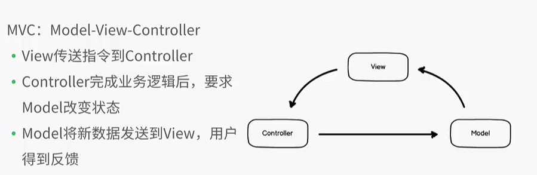

使用vue开发项目梳理及需要掌握的知识点
需要在部门内部做一个关于vue的培训，所以也就写了一个文档，来梳理一下vue的开发，及一些知识点
一、开发环境搭建
1.安装node.js
安装—>一路next—>完成
winows下打开cmd（mac下打开终端）,输入以下命令，输出后都能输出版本号，既是安装成功
$ node -v
v6.11.3
$ npm -v
3.10.10
由于npm服务器在国外，国内使用时会比较卡，所以我们需要使用cnpm(淘宝 NPM 镜像)来代替npm
cnpm使用说明
使用定制的 cnpm (gzip 压缩支持) 命令行工具代替默认的 npm:
npm install -g cnpm --registry=https://registry.npm.taobao.org
# 安装成功后就可以使用cnpm命令来安装模块了
$ cnpm install [name]
2.安装vue-cli
# 安装 vue-cli
$ npm install --global vue-cli
$ vue --version
2.8.2
二、相关知识点(不是必须)
1.模式
MVC模式
代表：backbone.js

MVVM
2.前端模块化
1.Sea.js
在 Sea.js 中，所有 JavaScript 模块都遵循 CMD（Common Module Definition） 模块定义规范。
在 CMD 规范中，一个模块就是一个文件。
2.RequireJS
RequireJS 遵循 AMD（异步模块定义）规范
3.CommonJS 规范
node采用的就是这种规范
CommonJS 规范是为了解决 JavaScript 的作用域问题而定义的模块形式，可以使每个模块它自身的命名空间中执行。该规范的主要内容是，模块必须通过 module.exports 导出对外的变量或接口，通过 require() 来导入其他模块的输出到当前模块作用域中。
5.webpack（最好了解下）
Webpack具有requireJs和browserify的功能，但仍有很多自己的新特性：
- 对 CommonJS 、 AMD 、ES6的语法做了兼容
- 对js、css、图片等资源文件都支持打包
- 串联式模块加载器以及插件机制，让其具有更好的灵活性和扩展性，例如提供对CoffeeScript、ES6的支持
- 有独立的配置文件webpack.config.js
- 可以将代码切割成不同的chunk，实现按需加载，降低了初始化时间
- 支持 SourceUrls 和 SourceMaps，易于调试
- 具有强大的Plugin接口，大多是内部插件，使用起来比较灵活
- webpack 使用异步 IO 并具有多级缓存。这使得 webpack 很快且在增量编译上更加快
3.语法 & node/模块
1. es2015（都什么年代了，还是熟练起来吧）
2. babel（咋回事总该要知道吧）
Babel 是一个 JavaScript 编译器
3. node API
path (路径)webpack中会遇到像：path.resolve(__dirname, '...')这样的语法
4. express（这个可以不看）
5. request（看看也没什么，很简单）
三、Vue
1. vue官方介绍 官网
Vue.js（读音 /vjuː/，类似于 view 的读音）是一套构建用户界面(user interface)的渐进式框架。与其他重量级框架不同的是，Vue 从根本上采用最小成本、渐进增量(incrementally adoptable)的设计。Vue 的核心库只专注于视图层，并且很容易与其他第三方库或现有项目集成。另一方面，当与单文件组件和 Vue 生态系统支持的库结合使用时，Vue 也完全能够为复杂的单页应用程序提供有力驱动。
总结就是：
- 良好的生态系统：生态系统支持的库
- MVVM的模式，数据的双向绑定
- 使用Virtual(虚拟) DOM
- 将注意力集中保持在核心库，同时也关注路由和负责处理全局状态管理的辅助库
- 提供了响应式(reactive)和可组合的视图组件(composable view component)。
- 使用单文件组件，结合webpack+vue-loader将vue组件转换为JavaScript 模块
- 结合webpack,可使用最新的JS语法或TypeScript
想要了解更多，请查看：对比其他框架
2.什么是Virtual(虚拟) DOM ?
首先，DOM是很慢的。
相对于 DOM 对象，原生的 JavaScript 对象处理起来更快，而且更简单。DOM 树上的结构、属性信息我们都可以很容易地用 JavaScript 对象表示出来：
var element = {
tagName: 'ul', // 节点标签名
props: { // DOM的属性，用一个对象存储键值对
id: 'list'
},
children: [ // 该节点的子节点
{tagName: 'li', props: {class: 'item'}, children: ["Item 1"]},
{tagName: 'li', props: {class: 'item'}, children: ["Item 2"]},
{tagName: 'li', props: {class: 'item'}, children: ["Item 3"]},
]
}
上面对应的HTML写法是：
<ul id='list'>
<li class='item'>Item 1</li>
<li class='item'>Item 2</li>
<li class='item'>Item 3</li>
</ul>
Virtual DOM 算法包括几个步骤：
- 用 JavaScript 对象结构表示 DOM 树的结构；然后用这个树构建一个真正的 DOM 树，插到文档当中
- 当状态变更的时候，重新构造一棵新的对象树。然后用新的树和旧的树进行比较，记录两棵树差异
- 把2所记录的差异应用到步骤1所构建的真正的DOM树上，视图就更新了
- Virtual DOM 本质上就是在 JS 和 DOM 之间做了一个缓存。可以类比 CPU 和硬盘，既然硬盘这么慢，我们就在它们之间加个缓存：既然 DOM 这么慢，我们就在它们 JS 和 DOM 之间加个缓存。CPU（JS）只操作内存（Virtual DOM），最后的时候再把变更写入硬盘（DOM）。
3.流行的vue库
UI框架：
四、实战
1.使用vue脚手架来搭建一个基于webpack模版的项目
# 安装 vue-cli
$ npm install --global vue-cli
# 使用 "webpack" 模板创建一个名为“Vue-webpack”的新项目
$ vue init webpack Vue-Admin //执行
? Project name (Vue-webpack) vue-webpack //回车
$ 如果出现以下信息，意思是，项目名称不能有大写字母
>> Sorry, name can no longer contain capital letters.
? Project description (A Vue.js project) //输入项目描述，回车
? Author (xxx <xxxxxxx@gmail.com>) //回车
# 出现下面的提示，回车
? Vue build (Use arrow keys)
❯ Runtime + Compiler: recommended for most users
Runtime-only: about 6KB lighter min+gzip, but templates (or any Vue-specific HTML) are ONLY allowed in .vue files - render functions are required elsewhere
? Install vue-router? (Y/n) y //输入 y,回车
? Use ESLint to lint your code? (Y/n) n //输入 n,回车
? Setup unit tests with Karma + Mocha? (Y/n) n //输入 n,回车
? Setup e2e tests with Nightwatch? (Y/n) n //输入 n,回车
初始化一个基于vue的前端项目完成
# 安装依赖，然后开始！
$ cd vue-webpack
$ npm install
$ npm run dev
2.上面我们已经将项目生成了，下面我们写一个简单的页面
vue项目目录结构
vue-webpack vue项目
│
├──build webpack配置文件夹
│ │
│ ├──build.js 生产环境构建
│ ├──check-versions.js 检查node、npm版本
│ ├──dev-client.js 开发模式下用到的工具，如：热重载
│ ├──dev-server.js 开发模式下，构建本地服务
│ ├──utils.js 构建工具相关，封装了webpack模块用到的方法
│ ├──vue-loader.conf.js .vue单文件加载配置
│ ├──webpack.base.conf.js webpack基础配置
│ ├──webpack.dev.conf.js webpack开发环境配置
│ ├──webpack.prod.conf.js webpack生产环境配置
│
├──config webpack配置所用变量
│ ├──dev.env.js 开发环境
│ ├──index.js webpack配置文件
│ ├──prod.env.js 生产环境
│
├──src 源文件夹
├──static 静态文件夹
├──.babelrc babel编译配置
├──.editorconfig 在IDE中提供代码一致性
├──.postcssrc.js 通过JS插件装换样式的工具
├──index.html webpack插件HtmlWebpackPlugin生成html所用的模版
├──package.json 项目信息及依赖
默认情况下：
# 构建生产代码
$ npm run build
vue-webpack目录下会生成dist文件夹
3.更改生产代码输出目录
更改在config文件夹下的index.js
index: path.resolve(__dirname, '../../myapp/dist/index.html'),
assetsRoot: path.resolve(__dirname, '../../myapp/dist'),
最终代码输出目录为：
vue-practice
│
├──vue-webpack vue项目
│ │
│
├──myapp
│ │
│ ├──dist
│ │ ├──index.html
│ │ ├──static
这个时候：
$ cd myapp
$ npm install
# 启动node服务
$ node bin/www
在浏览器中访问：http://localhost:3000/
4.开发环境下与测试接口进行数据交互
在vue-webpack下安装以下模块
$ npm i cookie-parser -D
$ npm i body-parser -D
$ npm i request -D
在build文件夹下将安装的模块引入dev-server.js
var cookieParser = require('cookie-parser');
var bodyParser = require('body-parser');
var request = require('request');
//找到下面的两个所在的位置
var app = express()
var compiler = webpack(webpackConfig)
//在上面的下面引入以下
app.use(bodyParser.json());
app.use(bodyParser.urlencoded({ extended: false }));
app.use(cookieParser());
app.all('/路由地址/*',function (req, res, next) {
//测试接口地址
var path = 'http://xxx.xxx.com'+req.path;
let params =req.body;
console.log(params);
console.log(path);
request({
url: path,
method: "POST",
json: true,
body: params
}, function (error, response, body) {
if (error) {
console.log(error);
} else {
console.log(typeof body);
res.send(body)
}
});
})
5.使用axios进行AJAX请求
安装
$ npm i axios -D
写法：
axios.post('接口地址', {键值对对象})
.then(function (response) {
console.log(response);
})
.catch(function (error) {
console.log(error);
});